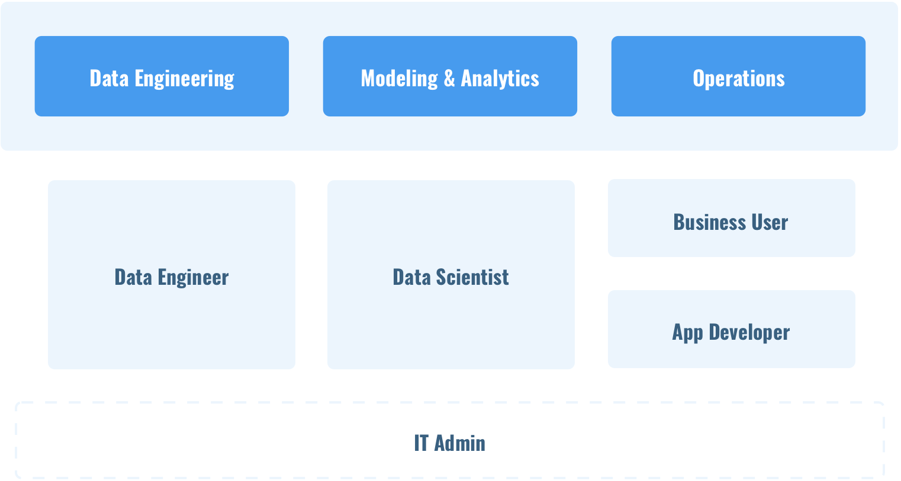

A big Data Platform as a Service (PaaS) solution for Nutanix’s experiential vision for the year 2023.
This project was done as a part of the Nutanix Global Design Hackathon 2018, where I teamed up with 5 designers from the San Jose and Bangalore office to come up with Nutanix’s experiential vision for the year 2023.
The project mainly focuses on simplifying the big data experience with the help of an end to end solution for data engineering, modelling and analytics and app deployments from one place giving freedom to the data scientists with the help of a Nutanix enabled platform called Yeta.
Research, Information Architechture, Prototyping, Visual Design
Team of 6 designers from San Jose and Bangalore
1 month (Sep to Oct 2018)
We selected data science as the domain for our hackathon project and started with an initial brainstorming around the problems faced by data scientists. We discovered that most of the world’s data has been generated in the last 2 years by social media and smart devices around the world, and is stored across data centers and clouds. Those who deal with this data have to spend a significant amount of their time dealing with the problems associated with this data as well.
According to IBM, this is the amount of data which is generated everyday.
80% of this data is stored by enterprises which is an analysts gold mine.
To get a clearer understanding of the context, we spent a huge amount of time studying the typical data science flow and the various tools used by data scientists and engineers. Typically, the source of data can be historic or live. This data is cleaned and stored somewhere and then later on passed through cognitive assisted technologies to derive insights which can be used to visualize and find patterns or build services or algorithms which can be used by applications to provide a customized end user experience.
This entire process is divided into three main phases of data engineering which includes data parsing, wrangling and cleaning, followed by modelling and analytics and finally these models are consumed to build applications.
The key people involved in this process are the Data Engineer who cleans up and stores the data and the data scientist who can model and analyse the data based on the business objective. Once the models are tested and validated, they can be used by business users to visualize and derive business insights using tools like Tableau/Thoughtspot etc. or consumed by the app developer to customize the applications based on the end user profile. There are a bunch of tools in the market which cater to this need.
As we talked to Data Scientists, in house and external folks, the key problem that emerged was that of a fragmented experience. Tools like H2O.AI focus only on the latter part of the pipeline which is analytics and deployment whereas tools like Dataiku or Rapid Miner focus mostly on the former part which is Data engineering and analytics. Even though AWS and Azure are trying to solve this problem by providing an end to end solution, the biggest problem is the movement of data from on premise to cloud.
Also, knowledge is needed about, data storage and collection infrastructures, how to manage that infrastructure, as well as configuration of tools to fit these use cases.
We came up with Yeta, a big data platform as a service (PaaS) solution which would be powered by Nutanix. Yeta provides an end to end solution for analytics and machine learning. You can just connect your data sources, launch modelling platforms and deploy models and apps from one place, which bridges the gap and provides freedom to the data scientist. The Data scientists are therefore, able to experiment with the various tools for their capabilities and choose the tools based on the use case.
Data models are orchestrated using the Yeta service, which provides a single pane of glass to manage all the data science projects. It can also be used to package them as a web service with APIs so that they are consumed by business applications. Therefore, Yeta provides model orchestration, version control of the models as well as test result management.
After many iterations, we came up with an interface for Nutanix Yeta that can be launched from Nutanix Central, the main service management console for Nutanix.
Since its a Nutanix experiential vision project for the year 2023, all the screens have not been shared here.
The Data Science Market is going to be worth more than 120 billion dollars by the year 2021. This will also go hand in hand with Xi, Nutanix’s very own hybrid cloud as it expands. You can work with on prem datasets without moving them to clouds. And the abundance of data that is captured as a part of Sherlock, Nutanix’s IOT product, can be further engineered, analysed, modelled and consumed to build applications using Yeta as a service.
It will also help focus on the IT crowd by bringing visibility into infrastructure consumption. Nutanix can cross sell this platform to existing customers. Lastly, talking about ‘One Click Simplicity’, Yeta is going to bring in a cohesive experience where users will be able to create and deploy models without code, version control the Models with a history of test runs, expose Models as a web service with defined APIs and create a Dataset marketplace.